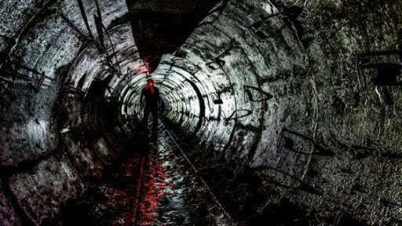
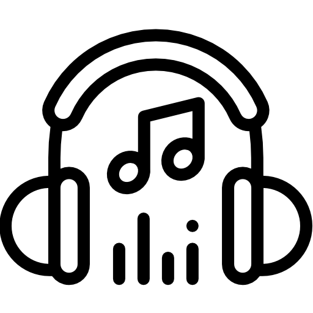
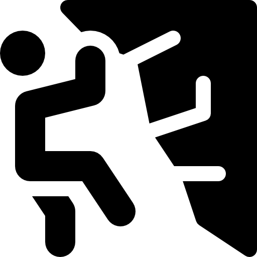
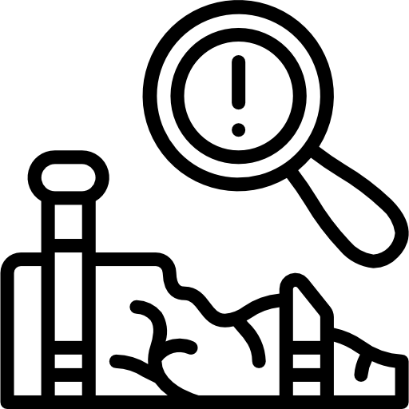

• Etudes
Bac STI2D
J'ai obtenu mon baccalauréat STI2D avec mention au lycée Louis Aragon à Héricourt (70) en 2015. C'est à cette période que j'ai pris goût à la Technique et pris la décision d'en faire mon avenir.
Formation ingénieur
J'ai intégré en 2015 l'Université de Technologie de Belfort-Montbéliard (UTBM) où j'y ai étudié pendant quatre ans. J'en tire, de ces années, des connaissances approfondies dans diverses branches des sciences ainsi qu'une rigueur de travail et une capacité d'apprentissage indispensable pour l'élaboration de projets.
Formation jeu vidéo
Je suis actuellement à l'école Ludus Académie (Strasbourg) depuis 2019. J'y développe mes compétences en programmation et conception de jeux. La façon de travailler de cette école nous permet de confirmer et de renforcer nos compétences acquises grâce aux nombreux projets que nous devons réaliser.
• Compétences


Gestion de projet
Durant mes études j'ai appris à organiser mon temps et mon travail dans le but de travailler efficacement et de finir mes projets dans les temps. Je suis capable de planifier un projet et d'élaborer des méthodes de travail adaptées pour obtenir un résultat à la hauteur de ce qui est attendu.
Pour cela j'utilise des outils d'organisation tels que des diagrammes de Gantt, des roadmaps, des algorithmes de procédé... Mais aussi des outils de partage et communication tels que Github, Trello, ou différents logiciels de communication. Je travaille très bien en équipe et représente un élément moteur tant dans la conception que dans la fabrication.
Programmation
Algorithme
Ma formation m'a appris à concevoir des algorithmes plus ou moins complexes pour répondre à des problématiques. Une fois l'algorithme élaboré, libre à moi de le traduire dans le langage de mon choix et de l'installer sur le matériel approprié.
Je suis familier au C, C# (grâce au moteur Unity), JavaScript (pour le web) et le python (dans Blender). Un langage de programmation est une syntaxe à appliquer. Je suis donc capable de m'adapter et d'apprendre rapidement à utiliser un nouveau langage de programmation si nécessaire.
Moteur
Concernant les moteurs (Unity 3D, Unreal Engine, Construct 3), je travaille beaucoup avec. J'ai rapidement privilégié le moteur Unity me permettant de me spécialiser avec et d'entreprendre des projets plus ambitieux. Je développe, d'ailleurs, mon propre moteur 2D en langage C.
Web
Comme vous pouvez le constater, mes compétences en développement web m'ont permis de construire le site sur lequel vous vous trouvez. Je suis formé au web statique et je suis une formation en web dynamique.
Je suis donc très familier au HTML, CSS et JavaScript. Je me forme actuellement à la base de données SQL, et au PHP.
Modélisation 3D
CAO
Durant la formation ingénieur, j'ai appris à utiliser des logiciels de modélisation très poussés (Catia, SolidWorks). J'ai appris à modéliser et paramétrer des pièces et assemblages complexes pour la production industrielle.
MAO
J'ai appris en autodidacte à utiliser le logiciel Blender. Ce logiciel permet de modéliser en 3D en vue d'utiliser les modèles dans l'audiovisuel ou le jeu vidéo. Ce logiciel permet également le rigging et l'animation de ces modèles. Concernant le texturing (le fait d'ajouter de la "couleur" à l'objet), j'utilise la suite Substance permettant d'appliquer des textures procédurales.
Game Design
La formation Ludus nous enseigne les différents outils de Game Design. Ces outils nous permettent de conceptualiser un jeu (vidéo ou non) original et d'élaborer un projet structuré et bien définit. Cette discipline mélange écriture et gestion de projet. C'est une étape essentielle avant de se lancer dans la création de contenu. Cela permet au client de valider les choix du designer et de donner son feu vert.
Le rôle de Game Designer interviendra tout au long de la création du projet afin d'aiguiller les équipes dans la direction souhaitée par le client.
• Projets & ambitions
Projet ARM
Le projet ARM est un projet ambitieux de jeu d'horreur dans lequel le joueur incarne Franck, un employé de bureau de la ARM. Lors de ses heures supplémentaires, rien ne se passera comme prévu pour Franck.
Il s'agit d'un projet utilisant le moteur Unity 3D. Le premier prototype a été développé à l'occasion du premier confinement français (printemps 2020). Aujourd'hui une refonte totale est en cours de développement. Cette refonte a pour but d'utiliser les nouvelles connaissances apprises récemment afin d'améliorer l'expérience de jeu.

Moteur SDL
Mon projet de moteur SDL consiste en l'élaboration d'un programme en C, utilisant la bibliothèque graphique SDL 2. L'objectif final de ce projet est de développer mon propre moteur 2D et de m'affranchir des moteurs existant. Ce projet se place comme un défi pour moi et je compte bien le relever !
Créer ce moteur me permet de m'améliorer grandement en C et, plus généralement, en développement de programmes complexes. De plus, je rencontre des problématiques inédites jusqu'à maintenant, telles que la gestion de la mémoire, de la performance, l'architecture des variables, etc... De plus, j'envisage déjà le développement d'un moteur physique associé permettant d'avoir des mécaniques physiques dans mes futures créations.
Projet Entomocene
Entomocene (le Règne de l'insecte), est un projet de jeu de type Rogue Like en caméra vue du dessus. L'univers de ce jeu s'encrerait dans un monde post-apocalyptique dans lequel la chaîne alimentaire serait inversée. Les insectes autrefois insignifiants, sont désormais de géants prédateurs.
Ce projet est actuellement en cours d'écriture et de conception. Il serait développé avec le moteur SDL que je programme en ce moment.
Formation électronique embarquée
Afin d'en apprendre toujours plus, j'ai décidé de me former à l'utilisation et à l'élaboration de systèmes électroniques Arduino. Je pourrai lier cela avec mes compétences en modélisation et en programmation dans l'optique de créer mes propres objets connectés et de répondre moi-même à des besoins ou des problématiques précises.
Projet RTS
Le RTS (Real Time Strategy) est un genre de jeu vidéo dans lequel le joueur devra appliquer une stratégie en temps réel (sans pause). On peut citer comme RTS connus : les jeux WarCraft et StarCraft.
Ce projet à pour but de bousculer mes habitudes de développement de jeu et de me forcer à penser d'avantage l'architecture des différents éléments du projet. En effet, j'avais pour habitude de créer des jeux dans lequel le joueur contrôle un personnage ; ici, le joueur contrôle des bâtiments et gère des ressources. Chacun des éléments sont autonomes et interagissent entre eux.
Et ensuite ?
Aujourd'hui
Aujourd'hui, en cette période étrange, le rythme de travail et d'apprentissage l'est tout autant. C'est pourquoi j'entreprends beaucoup de projet à but expérimental afin de sortir des sentiers battus et d'en apprendre plus en parallèle des cours. Je mets à profit ce temps que l'on avait pas avant pour me former, acquérir de nouvelles compétences et ainsi m'ouvrir d'avantage de portes.
Demain
Demain, j'aimerai continuer à m'améliorer tout en travaillant sur des projets plus concrets en m'associant à des personnes qui ont la même fougue que moi. Tout ceci représente ma passion et j'aimerai en faire mon métier.
• Loisirs
Arts


Sports
 